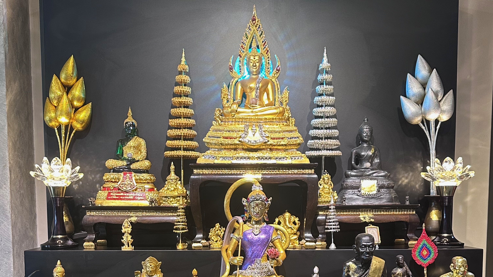

Bringing harmony into your space
Traditional Buddhist blessings, consecrated pieces and Feng Shui guidance in Singapore, from a practice of more than 20 years.
Have a chatTraditional Buddhist blessings, consecrated pieces and Feng Shui guidance in Singapore, from a practice of more than 20 years.
Have a chat

Sometimes life feels stuck: a run of bad luck, a home that no longer feels settled, or simply a wish for a fresh start. For more than 20 years, our Master has helped people through traditional Buddhist practice, consecrating sacred pieces, performing blessings and cleansings, and offering Feng Shui guidance for homes and workplaces.
Our practice is rooted in Buddhism, and our door is open to everyone, whatever your background or beliefs.
Inviting a sacred presence into a statue or amulet.
Prayers for a person, family, home or new beginning.
Guidance on the layout and energy of your home or workplace.
Clearing unsettled energy from a person or a space.
Cleansing stagnant energy from a home, office or object.
Every piece is consecrated by our Master, then placed in your home and consecrated again in its new spot.
Pieces chosen for their craftsmanship and the care of the artisans who made them.
We meet in person, visit homes locally, and take time to understand each situation.
Tell us yours. We're happy to listen.